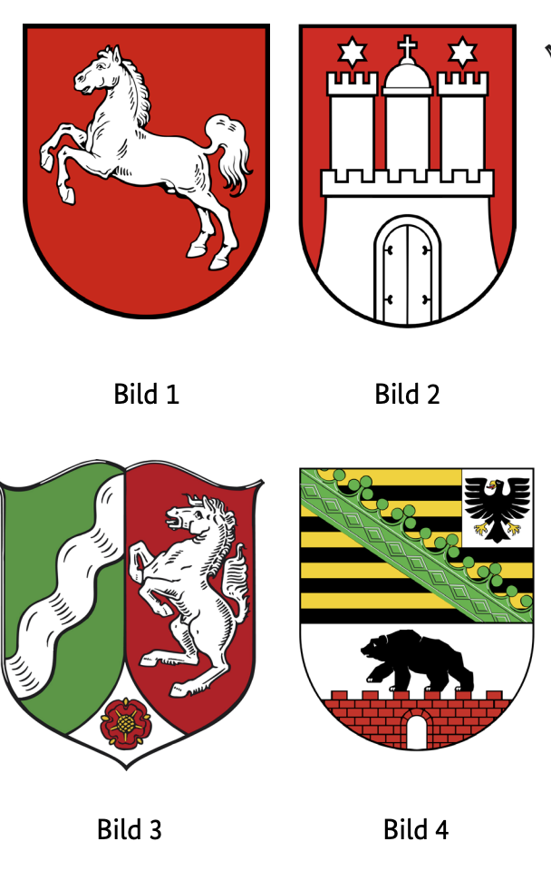
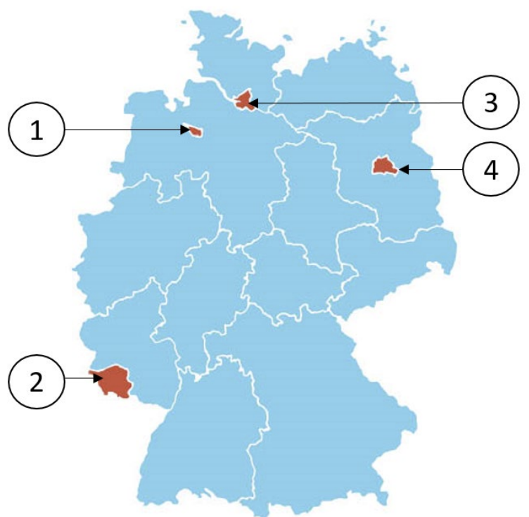

Resmi BAMF soru havuzundaki 10 Hamburg (HH) eyalet sorusunun Almanca ve Türkçe açıklamalı interaktif çözümleri. Soru üzerine tıklayarak bilginizi anında test edin.
Almanya vatandaşlık ve kalıcı oturum için yapılan Leben in Deutschland (LiD) sınavında adaya toplam 33 çoktan seçmeli soru sorulur:
30 Genel Soru: Demokrasi, hukuk, tarih ve toplumsal yaşam (300 genel soru havuzundan).
3 Eyalet Sorusu: İkamet ettiğiniz eyalete özel tarih, coğrafya ve anayasa soruları (Aşağıdaki 10 eyalet sorusu havuzundan).
Sınavı geçmek için 33 sorudan en az 15 doğru (Vatandaşlık şartı) veya 17 doğru (Oryantasyon kursu başarı sertifikası) yapmanız gerekmektedir.
📝 10 Resmi Hamburg Sorusunu Çözün
Soru #351 (1 / 10)Federal Eyalet: Hamburg
Welches Wappen gehört zur Freien und Hansestadt Hamburg?
TR: Hangi arma Özgür ve Hansa Şehri Hamburg'a aittir?

✅ Doğru Cevap: Şık B (Bild 2)
Soru, Alman şehirlerinin resmi amblemlerinin tanınmasıyla ilgilidir. Özgür ve Hansa Şehri Hamburg'un kendi arması vardır; bu arma, tarihini, şehir-devlet statüsünü ve liman kenti olarak önemini yansıtır. Görevde birkaç arma görüntüsü gösterilir ve hangilerinin Hamburg'a ait olduğuna karar vermek gerekir. Alman şehir armaları veya görsel özellikleri hakkında bilgi sahibi olmak yardımcı olabilir.
Die Frage bezieht sich auf die Erkennung von offiziellen Hoheitszeichen deutscher Städte. Die Freie und Hansestadt Hamburg besitzt ein eigenes Wappen, das ihre Geschichte, ihren Status als Stadtstaat und ihre Bedeutung als Hafenstadt widerspiegelt. In der Aufgabe werden mehrere Abbildungen von Wappen gezeigt, und es gilt zu entscheiden, welches davon zu Hamburg gehört. Kenntnisse über deutsche Städtewappen oder visuelle Merkmale können dabei helfen.
The question relates to the recognition of official emblems of German cities. The Free and Hanseatic City of Hamburg has its own coat of arms, which reflects its history, its status as a city-state and its importance as a port city. In the task, several images of coats of arms are shown, and it is necessary to decide which of them belongs to Hamburg. Knowledge of German city coats of arms or visual features can help.
المسألة تتعلق بالاعتراف بالرموز الرسمية للمدن الألمانية. تمتلك مدينة هامبورغ الحرة والهانزية شعارها الخاص، الذي يعكس تاريخها، ووضعها كمدينة-دولة، وأهميتها كمدينة ميناء. في المهمة، تعرض عدة صور لشعارات النبالة، ومن الضروري تحديد أيها ينتمي إلى هامبورغ. معرفة شعارات المدن الألمانية أو الخصائص البصرية يمكن أن تساعد.
Питання стосується визнання офіційних емблем німецьких міст. Вільне та ганзейське місто Гамбург має власний герб, який відображає його історію, статус міста-держави та важливість як портового міста. У цьому завданні показано кілька зображень гербів, і необхідно визначити, який із них належить Гамбургу. Знання німецьких міських гербів або візуальних особливостей може допомогти.
Soru #352 (2 / 10)Federal Eyalet: Hamburg
Welches ist ein Bezirk von Hamburg?
TR: Hamburg'un bir ilçesi hangisi?
✅ Doğru Cevap: Şık A (Altona)
Soru Almanya'daki idari yapı ile ilgilidir. Hamburg gibi büyük şehirler, şehir yönetiminin bir parçası olan sözde bölgelere ayrılmıştır. Diğer olası cevaplar Berlin, Bremen veya Mecklenburg-Batı Pomeranya gibi farklı federal eyaletler veya şehirlere aittir. Bu bilgiyle, bahsedilen bölgelerden hangisinin aslında Hamburg şehrinin bir bölgesi olduğu tespit edilebilmelidir.
Die Frage bezieht sich auf die Verwaltungsstruktur in Deutschland. Große Städte wie Hamburg sind in sogenannte Bezirke eingeteilt, die Teil der Stadtverwaltung sind. Andere Antwortmöglichkeiten gehören zu unterschiedlichen Bundesländern oder Städten, etwa zu Berlin, Bremen oder Mecklenburg‑Vorpommern. Mit diesem Wissen soll erkannt werden, welches der genannten Gebiete tatsächlich ein Bezirk der Stadt Hamburg ist.
The question relates to the administrative structure in Germany. Large cities such as Hamburg are divided into so-called districts, which are part of the city administration. Other possible answers belong to different federal states or cities, such as Berlin, Bremen or Mecklenburg-Western Pomerania. With this knowledge, it should be possible to identify which of the areas mentioned is actually a district of the city of Hamburg.
السؤال يتعلق بالهيكل الإداري في ألمانيا. المدن الكبيرة مثل هامبورغ مقسمة إلى ما يسمى بالأحياء، وهي جزء من إدارة المدينة. هناك إجابات محتملة أخرى تخص ولايات أو مدن اتحادية مختلفة، مثل برلين، بريمن أو مكلنبورغ-بوميرانيا الغربية. وبهذه المعرفة، يجب أن يكون من الممكن تحديد أي من المناطق المذكورة هي في الواقع حي من مدينة هامبورغ.
Питання стосується адміністративної структури в Німеччині. Великі міста, такі як Гамбург, поділені на так звані райони, які входять до складу міської адміністрації. Інші можливі відповіді належать різним федеральним землям або містам, таким як Берлін, Бремен або Мекленбург-Передня Померанія. Маючи ці знання, можна визначити, яка з згаданих територій насправді є районом міста Гамбург.
Soru #353 (3 / 10)Federal Eyalet: Hamburg
Für wie viele Jahre wird das Landesparlament in Hamburg gewählt?
TR: Hamburg'daki eyalet parlamentosu kaç yıl boyunca görev yapacak?
Seçildi?
✅ Doğru Cevap: Şık C (5)
Almanya'daki hayat için önemli bir soru
Wichtige Frage für das Leben in Deutschland
Important question for life in Germany
سؤال مهم للحياة في ألمانيا
Важливе питання для життя в Німеччині
Soru #354 (4 / 10)Federal Eyalet: Hamburg
Ab welchem Alter darf man in Hamburg bei Kommunalwahlen (Wahl der Bezirksversammlungen) wählen?
TR: Hamburg'da yerel seçimlerde oy kullanmaya hangi yaştan itibaren izin veriliyor (seçim
bölge meclislerinin bir kısmı)?
✅ Doğru Cevap: Şık B (16)
Almanya'daki hayat için önemli bir soru
Wichtige Frage für das Leben in Deutschland
Important question for life in Germany
سؤال مهم للحياة في ألمانيا
Важливе питання для життя в Німеччині
Soru #355 (5 / 10)Federal Eyalet: Hamburg
Welche Farben hat die Landesflagge von Hamburg?
TR: Hamburg devlet bayrağı hangi renklere sahip?
✅ Doğru Cevap: Şık B (weiß-rot)
Aşağıdaki soru, Almanya federal eyaletleri ve onların resmi sembollerine atıfta bulunmaktadır. Her eyaletin tarihsel ve kültürel açıdan önemli belirli renklere sahip kendi bayrağı vardır. Doğru cevabı bulmak için, özellikle Hamburg şehri hakkında Alman şehir veya ülkelerinin bayrakları hakkında temel bilgi edinmek faydalıdır.
Die folgende Frage bezieht sich auf die deutschen Bundesländer und ihre offiziellen Symbole. Jedes Bundesland hat eine eigene Flagge mit bestimmten Farben, die historisch und kulturell bedeutsam sind. Um die richtige Antwort zu finden, ist grundlegendes Wissen über die Flaggen deutscher Städte oder Länder hilfreich, insbesondere über die Stadt Hamburg.
The following question refers to the German federal states and their official symbols. Each state has its own flag with certain colors that are historically and culturally significant. To find the right answer, basic knowledge about the flags of German cities or countries is helpful, especially about the city of Hamburg.
السؤال التالي يشير إلى الولايات الفيدرالية الألمانية ورموزها الرسمية. لكل ولاية علمها الخاص بألوان معينة ذات أهمية تاريخية وثقافية. للعثور على الإجابة الصحيحة، فإن المعرفة الأساسية عن أعلام المدن أو الدول الألمانية مفيدة، خاصة عن مدينة هامبورغ.
Наступне питання стосується німецьких федеральних земель та їхніх офіційних символів. Кожен штат має власний прапор із певними кольорами, які мають історичне та культурне значення. Щоб знайти правильну відповідь, корисно мати базові знання про прапори німецьких міст або країн, особливо про місто Гамбург.
Soru #356 (6 / 10)Federal Eyalet: Hamburg
Wo können Sie sich in Hamburg über politische Themen informieren?
TR: Hamburg'da siyasi konuları nereden öğrenebilirsiniz?
?
✅ Doğru Cevap: Şık D (bei der Landeszentrale für politische Bildung)
Almanya'daki hayat için önemli bir soru
Wichtige Frage für das Leben in Deutschland
Important question for life in Germany
سؤال مهم للحياة في ألمانيا
Важливе питання для життя в Німеччині
Soru #357 (7 / 10)Federal Eyalet: Hamburg
Welches Bundesland ist ein Stadtstaat?
TR: Hangi eyalet şehir-devlettir?
✅ Doğru Cevap: Şık A (Hamburg)
Aşağıdaki soru Almanya'nın siyasi sistemine atıfta bulunmaktadır. Almanya, bazıları sözde şehir devletleri olan birkaç federal eyaletten oluşur. Şehir-devlet, yalnızca bir şehirden oluşan federal bir eyalettir. Bahsedilen seçeneklerden hangisi böyle bir şehir-devlet?
Die folgende Frage bezieht sich auf das politische System Deutschlands. Deutschland besteht aus mehreren Bundesländern, von denen einige sogenannte Stadtstaaten sind. Ein Stadtstaat ist ein Bundesland, das nur aus einer Stadt besteht. Welche der genannten Optionen ist ein solcher Stadtstaat?
The following question refers to the political system of Germany. Germany consists of several federal states, some of which are so-called city states. A city-state is a federal state that consists of only one city. Which of the options mentioned is such a city-state?
السؤال التالي يشير إلى النظام السياسي في ألمانيا. تتكون ألمانيا من عدة ولايات اتحادية، بعضها يسمى ما يسمى بدول المدن. مدينة-دولة هي ولاية اتحادية تتكون من مدينة واحدة فقط. أي من الخيارات المذكورة هو مثل هذه المدينة-الدولة؟
Наступне питання стосується політичної системи Німеччини. Німеччина складається з кількох федеральних земель, деякі з яких є так званими містами-державами. Місто-держава — це федеральна держава, яка складається лише з одного міста. Який із згаданих варіантів є таким містом-державою?
Soru #358 (8 / 10)Federal Eyalet: Hamburg
Welches Bundesland ist Hamburg?
TR: Hamburg hangi eyalet?

✅ Doğru Cevap: Şık C (3)
Almanya'da ülke 16 federal eyalete ayrılmıştır. Sözde bölgesel devletlerin yanı sıra, şehir-devletler de vardır. Şehir devletleri, aynı anda kendi federal eyaletlerini oluşturan ve başka üst düzey devlet idaresi olmayan şehirlerdir. Bu özel federal eyaletler sadece birkaç büyük şehri kapsar. Soru, Hamburg'un bu federal sistemde ne rolünün oynandığını kontrol etmeyi amaçlıyor.
In Deutschland ist das Land in 16 Bundesländer gegliedert. Neben sogenannten Flächenländern gibt es auch Stadtstaaten. Stadtstaaten sind Städte, die gleichzeitig ein eigenes Bundesland bilden und keine weitere übergeordnete Landesverwaltung haben. Zu diesen besonderen Bundesländern zählen nur wenige große Städte. Die Frage zielt darauf ab zu überprüfen, ob bekannt ist, welche Rolle Hamburg innerhalb dieses föderalen Systems einnimmt.
In Germany, the country is divided into 16 federal states. In addition to so-called territorial states, there are also city-states. City states are cities that simultaneously form their own federal state and have no other superordinate state administration. These special federal states include only a few large cities. The question aims to check whether it is known what role Hamburg plays within this federal system.
في ألمانيا، تنقسم البلاد إلى 16 ولاية اتحادية. بالإضافة إلى ما يسمى بالدول الإقليمية، هناك أيضا مدن-دول. المدن هي مدن تشكل في الوقت نفسه ولاية اتحادية خاصة بها ولا تملك إدارة حكومية متفوقة أخرى. تشمل هذه الولايات الفيدرالية الخاصة عددا قليلا فقط من المدن الكبرى. يهدف السؤال إلى التحقق مما إذا كان من المعروف ما هو الدور الذي تلعبه هامبورغ ضمن هذا النظام الفيدرالي.
У Німеччині країна поділена на 16 федеральних земель. Окрім так званих територіальних держав, існують також міста-держави. Міста-держави — це міста, які одночасно утворюють власну федеральну державу і не мають іншої суперординальної державної адміністрації. Ці спеціальні федеральні штати включають лише кілька великих міст. Питання має на меті перевірити, чи відомо, яку роль відіграє Гамбург у цій федеральній системі.
Soru #359 (9 / 10)Federal Eyalet: Hamburg
Wie nennt man die Regierungschefin / den Regierungschef des Stadtstaates Hamburg?
TR: Hükümet başkanına ne diyorsunuz?
Hamburg şehir-devleti mi?
✅ Doğru Cevap: Şık B (Erste Bürgermeisterin / Erster Bürgermeister)
Almanya'daki hayat için önemli bir soru
Wichtige Frage für das Leben in Deutschland
Important question for life in Germany
سؤال مهم للحياة في ألمانيا
Важливе питання для життя в Німеччині
Soru #360 (10 / 10)Federal Eyalet: Hamburg
Welche Senatorin / welchen Senator hat Hamburg nicht?
TR: Hamburg'da hangi senatör yok?
✅ Doğru Cevap: Şık B (Senatorin / Senator für Außenbeziehungen)
Soru, Hamburg federal eyaletinin siyasi yapısıyla ilgilidir. Hamburg hem bir şehir hem de bir ülkedir ve bir senato tarafından yönetilir. Bu Senato, İlk Belediye Başkanı ve her biri İçişleri, Adalet veya Maliye gibi belirli bakanlıklardan sorumlu birkaç senatörün bulunduğu bir kadrodan oluşur. Görev dağılımına bağlı olarak, bazı senato makamları vardır, bazıları federal düzeyde yaygındır ancak Hamburg'da yoktur.
Die Frage bezieht sich auf die politische Struktur des Bundeslandes Hamburg. Hamburg ist sowohl Stadt als auch Land und wird von einem Senat regiert. Dieser Senat besteht aus dem Ersten Bürgermeister bzw. der Ersten Bürgermeisterin und mehreren Senatoren und Senatorinnen, die jeweils für bestimmte Ressorts wie Inneres, Justiz oder Finanzen zuständig sind. Je nach Aufgabenverteilung gibt es bestimmte Senatorenämter, während andere auf Bundesebene üblich sind, aber in Hamburg nicht existieren.
The question relates to the political structure of the federal state of Hamburg. Hamburg is both a city and a country and is governed by a senate. This Senate consists of the First Mayor and several senators, each of whom is responsible for specific departments such as Interior, Justice or Finance. Depending on the distribution of tasks, there are certain senatorial offices, while others are common at the federal level but do not exist in Hamburg.
المسألة تتعلق بالهيكل السياسي لولاية هامبورغ الفيدرالية. هامبورغ مدينة ودولة في آن واحد، وتحكمها مجلس شيوخ. يتكون هذا المجلس من العمدة الأول وعدة أعضاء مجلس شيوخ، كل منهم مسؤول عن وزارات محددة مثل الداخلية، والعدل، أو المالية. اعتمادا على توزيع المهام، هناك بعض المناصب البرلمانية، بينما هناك مكاتب أخرى شائعة على المستوى الفيدرالي لكنها غير موجودة في هامبورغ.
Питання стосується політичної структури федеральної землі Гамбург. Гамбург є одночасно містом і країною, і управляється сенатом. Цей Сенат складається з першого мера та кількох сенаторів, кожен з яких відповідає за конкретні департаменти, такі як внутрішні справи, юстиція чи фінанси. Залежно від розподілу завдань, існують певні сенаторські посади, інші поширені на федеральному рівні, але не існують у Гамбурзі.
300 Genel Soruyu ve Eyalet Sorularını Eksiksiz Çalışın
DeutschLernen LiD Trainer'da tüm 310 soruyu 5 farklı dilde (Türkçe, İngilizce, Arapça, Ukraynaca, Almanca) çözebilir, deneme sınavı simülasyonu yapabilirsiniz.